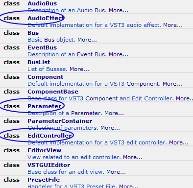

/ VST Home
What is the VST SDK?
On this page:
- VST SDK explained
- What is included
- VST 3 Plug-ins Examples
- VST 3 Plug-in Test Host
- VST 3 Project Generator
- Validator command line
- AudioHost
- EditorHost
- VST 3 Inspector
- VSTGUI
- AAX, AUv3 and AU wrappers
- iOS Inter-App Audio support
- VST 3 Licensing
- System requirements
- Download link
- Change history
VST SDK explained
The VST SDK (Virtual Studio Technology Software Development Kit) is a collection of software development tools included in one package. This allows plug-in developers to create plug-ins in VST 3 format and host developers to load VST 3 plug-ins into a DAW or audio editor.
What is included
The VST SDK package contains:
The VST 3 API
This is a C++ interface defining how a VST 3 plug-in communicates with a host and vice versa. The heart of VST 3.
Check the folder "pluginterfaces/vst" of the SDK!
VST 3 Implementation Helper Classes
Some helper classes are provided, implementing some VST 3 interfaces for hosting and for creating VST 3 plug-ins. Simply derived your plug-in C++ classes from these helper classes.

Check the folder "public.sdk" of the SDK!
VST 3 Plug-ins Examples
The SDK includes some Plug-ins implementation examples.
VST 3 Plug-in Test Host
The SDK provides a test application called VST3PluginTestHost for Apple macOS (Apple Silicon/Intel x86_64) and Microsoft Windows (x64 and Arm64EC).
VST 3 Project Generator
This open source application (Win/macOS) allows you to generate easily a new VST 3 plug-in project by just entering in a GUI some parameters.
Validator command line
The validator is a small command line host application (source code included) which can be used to check your plug-in for VST 3 conformity.
AudioHost
Simple cross-platform (only tested on Linux) host application allowing you to register a VST 3 plug-in with Jack Server.
EditorHost
Simple cross-platform (Win/macOS/Linux) host application allowing you to open the editor of a VST 3 plug-in.
VST 3 Inspector
Simple cross-platform (Win/macOS/Linux) host application, built with VSTGUI, which scans the VST 3 Folder, collects information from the factory about each VST 3 plug-in and display it in its UI.
VSTGUI
This is a user interface toolkit mainly for audio plug-ins (VST, AudioUnit, etc). Based on the XML definition of the plug-in UI, VSTGUI includes an embedded editor (UIDescription Editor) which allows the developer to create a plug-in UI just by drag & drop of the UI element.
AAX, AUv3 and AU wrappers
These wrappers allow you to create versions of your VST 3 plug-in in other plug-in formats with minimum effort.
iOS Inter-App Audio support
iOS InterApp-Audio application out of your VST 3 plug-in
VST 3 Licensing
Please sign this Steinberg VST 3 Plug-in SDK Licensing Agreement if you want to develop, release or host VST 3 plug-Ins.
System requirements
| Operating System | Architecture | Compiler | Notes |
|---|---|---|---|
| Windows 11 | x86, x86_64, arm64, arm64EC | MSVC 2022 | |
| Windows 8.1/10 | x86, x86_64 | MSVC 2019, MSVC 2022 | |
| macOS 10.13 - 15 | x86, x86_64, Apple Silicon | Xcode 10 - 16 | |
| iOS 13 - 18 | arm64 | Xcode 11 - 16 | |
| Linux - Ubuntu 24.04 LTS | x86_64 | GCC 13.3 and higher | Visual Studio Code, Qt Creator |
Download link
Important links you will need for working with VST 3
Change history
All released versions of the VST SDK with changes and dates.